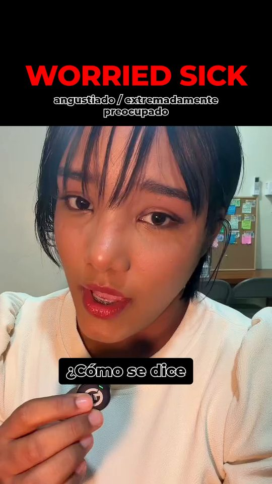

01: Gancho: frase principal desde 00:00.000
0.00 – 1.04 s · original 0.00 – 1.04
- Frase fija
- WORRIED SICK (rojo) + “angustiado / extremadamente preocupado” (negro con contorno blanco). Visible desde el fotograma 0, sin animación de entrada, fija hasta el final.
- Subtítulo
- “¿Cómo se dice”
- Cámara
- 100 % → 105 % (empuje lento y continuo hasta 5.2 s)
- Posición
- Recuadro negro 0–500 px arriba · subtítulo a 1420 px, bajo el mentón